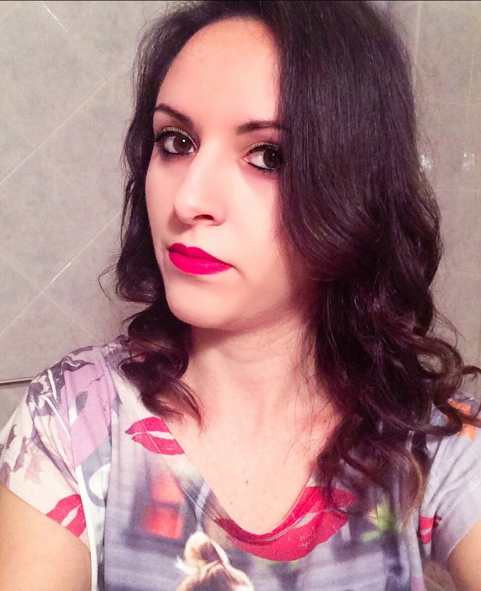
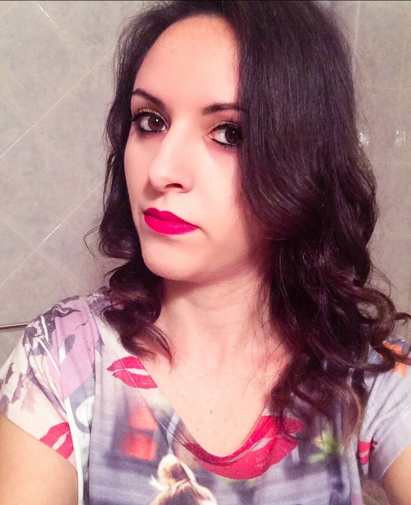
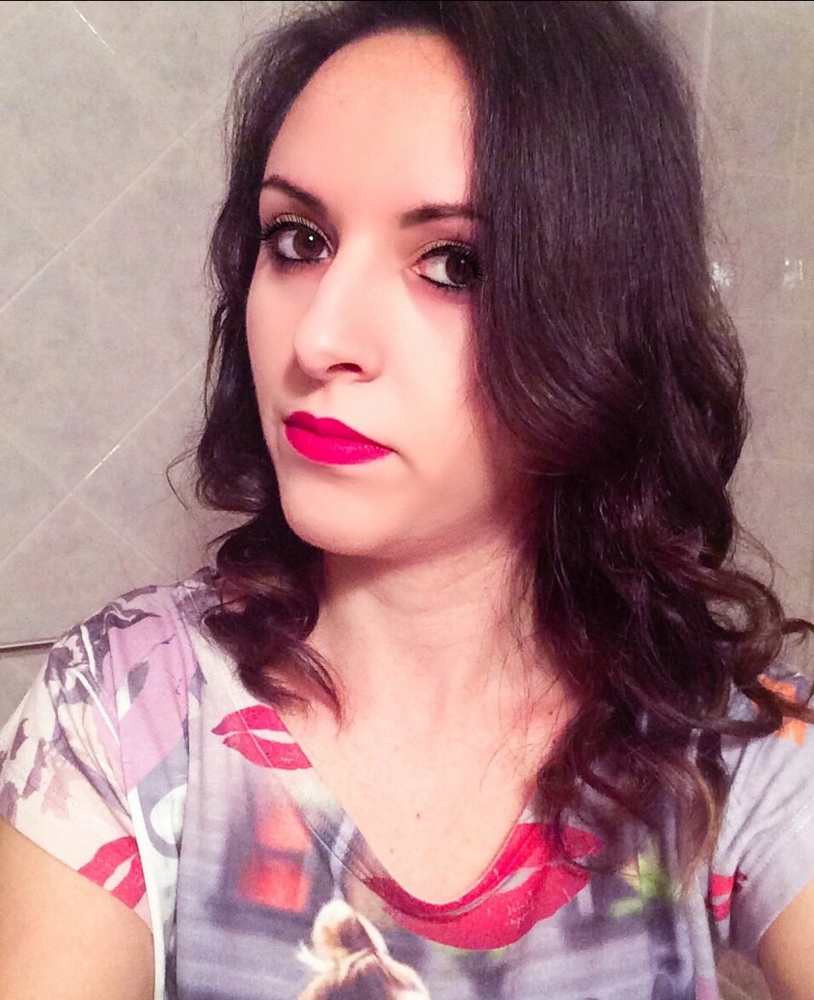

Ritorna alla Home Page

English Version
Biography
Date of Birth.: 6 January 1992
School Education
July 2011:
Scientific Degree
26 March 2020: Degree in
Computer Science
at University of Basilicata, Potenza, Italy.
Experimental Thesis:
Steganography on PDF files
Thesis Supervisor: Eng. Domenico Daniele Bloisi
Skills
Excellent expertise of the following
programming languages
:
Java, C, C++, C#, Matlab, LaTex, HTML, SQL
Microsoft Office
package's excellent expertise
Development in .NET, NetBeans, TeXstudio e GitHub platforms
Excellent expertise of Windows and Linux(Ubuntu) operating systems
Goals for the Future
I want to learn programming languages for mobile devices (
iOS
&
Android
)
I want to learn the
Python
programming language
Native language: Italian language
English language: level B1
French language: level A2
Italian Version
Biografia
Data di Nascita: 6 Gennaio 1992
Istruzione
Luglio 2011:
Maturità Scientifica
26 Marzo 2020: Laurea in
Scienze e Tecnologie Informatiche
presso l'Università degli Studi della Basilicata, Potenza, Italia.
Tesi Sperimentale:
Steganografia su PDF
Relatore: Ing. Domenico Daniele Bloisi
Competenze
Ottima conoscenza dei seguenti
linguaggi di programmazione
:
Java, C, C++, C#, Matlab, LaTex, HTML, SQL
Ottima conoscenza del pacchetto Office di Microsoft
Sviluppo in ambiente .NET, NetBeans, TeXstudio e GitHub
Ottima conoscenza dei sistemi operativi Windows e Linux(Ubuntu)
Obiettivi per il futuro:
Conoscenza dei linguaggi di programmazione per dispositivi mobile (
iOS
e
Android
)
Conoscenza del linguaggio di programmazione
Python
Lingua madre: italiano
Lingua inglese: livello B1
Lingua francese: livello A2
 
